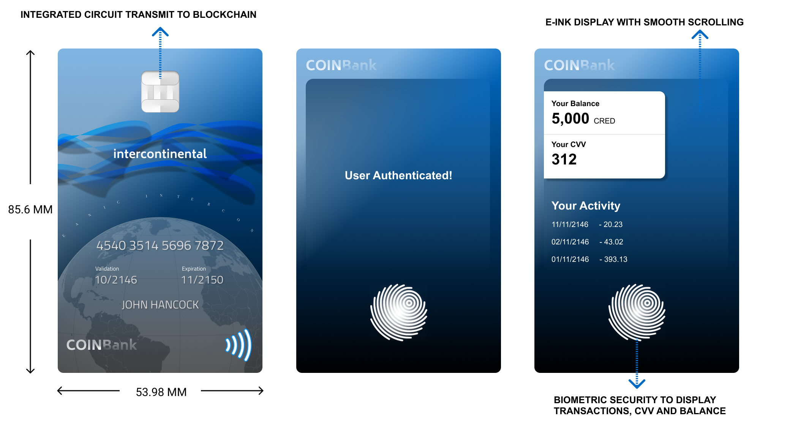

I produced the designs from my mood board. I thought about their manufacturing standards and materials. I used the Euro design language and metric system as the standard due to a change in the sphere of influence.
I based the Five CRED on €1 dimensions and the Ten CRED on €2 dimensions. (European Central Bank, 2020) . However, coins will be made of metallic polymer plastic reducing precious metals usage similar to the German €5 released in 2016. (Sparrow, 2015)

Bills will be in portrait, making it look suitable for e-me. Polymer plastic will still be used due to its recylable nature. The 100 CRED note follow the €100 dimensions and 500 CRED follow the €500 dimensions.
Currency embeds circuitry allowing it to transmit Bluetooth signal to the e-me device when currency changes hands. The integrated circuit exists in both coins and notes.
Bank Cards contain biometric security to authenticate owners when making transactions.